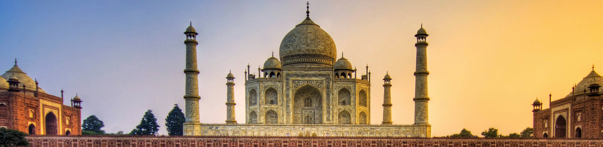
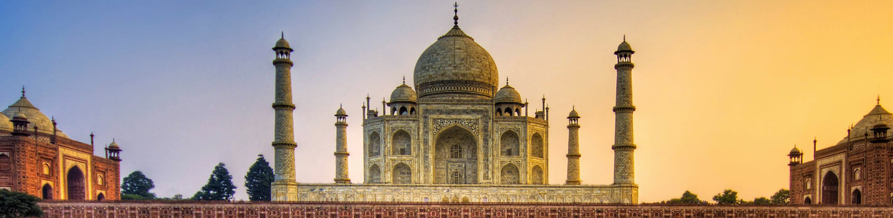

| |
Home | History | Destinations | Art and Culture | National Campaign | Contact Us |
|---|

The Red Fort Complex was built as the palace fort of Shahjahanabad – the new capital of the fifth Mughal Emperor of India, Shah Jahan. Named for its massive enclosing walls of red sandstone, it is adjacent to an older fort, the Salimgarh, built by Islam Shah Suri in 1546, with which it forms the Red Fort Complex. The private apartments consist of a row of pavilions connected by a continuous water channel, known as the Nahr-i-Behisht (Stream of Paradise). The Red Fort is considered to represent the zenith of Mughal creativity which, under the Shah Jahan, was brought to a new level of refinement. The planning of the palace is based on Islamic prototypes, but each pavilion reveals architectural elements typical of Mughal building, reflecting a fusion of Persian, Timurid and Hindu traditions The Red Fort’s innovative planning and architectural style, including the garden design, strongly influenced later buildings and gardens in Rajasthan, Delhi, Agra and further afield. This palace fortress is known as the Red Fort because of the red sandstone fabric of its rampart walls. The fort with its halls, palaces, pavilions and serene gardens was completed in 1648. Within the enclosure of the red fort are located many fairytale buildings. The Diwan-i-Khas (also known as Shah Mahal) and the Rang Mahal (also called Imtiyaz Mahal or palace of distinctions) are the two most conspicuous buildings inside the Red Fort. The Hall of Public Audience (Diwan-i- Aam) is another famous building within the Red Fort. Son-et-lumiere shows, tracing the history of the Mughal Empire in India, outlining their glory and the eventful causes for their downfall are held in the Red Fort every evening. Son-et-lumiere shows, tracing the history of the Mughal Empire in India, outlining their glory and the eventful causes for their downfall are held in the Red Fort every evening.
 

The Taj Mahal a marvel on marble was built by the Mughal Emperor Shah Jahan in commemoration of his favourite wife, Empress Mumtaz Mahal. Shah Jahan married Arjumand Bano Begum (Mumtaz Mahal), grand daughter of Itimad-Ud-Daula, the Wazir (Prime Minister) of Emperor Jahangir in 1612 AD. Mumtaz Mahal died in 1631 A.D. at the birth of her 14th child. The grief stricken emperor made all efforts in building the tomb in her memory, which is universally acknowledged as one of the most beautiful creations on earth. Artisans were requisitioned from all over the empire including Central Asia and Iran. While bricks for the internal framework were locally made. White marble for external surfaces was brought from Makrana, Rajasthan. The inscription on the northern facade records 1057A.H. (1647A.D.) as the date of its completion in 17 years . It is believed that Ustad Ahmad Lahori was the chief of the project while Ustad Isa Afandi prepared the site plan of the Taj Mahal. Amanat Ali Khan Shirazi is known for his calligraphic work and Ran Mal was the garden designer from Kashmir. The plan of Taj Mahal display strict bilateral symmetry. The central point is the tomb (rauza) and its four minarets, flanked by a mosque and assembly hall (Mehman Khana) The Taj is exactly as wide as it is high (55mtrs). A highlight of the monument is the exquisitely carved pietra dura inlaid with semi precious stones. The colour of the translucent marble keeps changing from dawn to midnight giving it a magical aura in keeping with Shah Jahan’s vision that the tomb and garden should represent paradise on earth. It is a unique man made manifestation of the glorious Mughal age and a wonder of the world. After his death in 1666 A.D., Shah Jahan was also buried beside his beloved wife in the Taj Mahal.
Built during the reign of Emperor Ashoka around 3rd Century BC, the splendid architecture of the Stupa is surrounded by ‘Toranas’ that reflect love, peace, trust, and courage. The central chamber of the Stupa is made up of large hemispherical domes, which comprise of different relics of Lord Buddha. It is one of the well preserved ancient stupas in central India and is ranked among the world Heritage sites.
If you only visit one museum in Delhi, make sure it’s the National Museum. A couple of hours’ stay here will equip you with the historical knowledge you will need for when you go exploring the capital city as well as the rest of India. Documenting history and culture of the Indian subcontinent, the museum owns some 150,000 items covering some 5 millennia. Some of the gems of the museum are the Chola statue of the cosmic dance of Lord Shiva, finds from the Indus Valley Civilization, relics of the Buddha from Piprahwa and an amazing collection of miniature paintings.
Lying in the south of Uttar Pradesh, on the banks of the holy River Ganga, breathes Varanasi, which is believed to be the the oldest living city in the world. For centuries, the mystic of this place has been attracting pilgrims from across India as well as abroad. A dwelling of ancient domes, muths, ashrams, priests, narrow lanes with shops filled with Benaresi sarees, Varanasi represents the colorful and fascinating India of your dreams. With intimate rituals of life and death being parallelly performed on the Ghats, you’ll find it exhilarating to explore the religious geography of this city. Walk through the busy alleyways or watch the sunrise from a boat for an unforgettable experience. Trace the perimeter of the city, paying homage to shrines all the way. Who knows, a journey to this City of Light may turn out to be your favorite stop of all.
Tirupati, the holy city is located in the southeastern part of Andhra Pradesh, in Chittoor district. Known as the abode of the 'Kaliyuga' deity Lord Venkateswara popularly known as Balaji, Tirupati is famous for the Venkateswara temple in the sacred Tirumala hills at an elevation of 860m. One of the most important pilgrimage centers in India, the temple draws millions of pilgrims and is believed to be the busiest pilgrimage centre in the world. In fact, the government has proposed to give special status to the town on the lines of the Vatican. Lying at the southern tip of the Eastern ghats in Andhra Pradesh, the district has a number of perennial water falls and vast forest cover. Tirupati town itself, has several temples and is famous for its red wooden toys, copper and brass idols. Tirupati has for centuries remained a destination divine and this feeling grows on one as one goes round the various temples and spots of natural beauty surrounding this major town. Around 700 kms from Hyderabad, Tirupati is situated amidst the lush green Eastern Ghats in Chittoor district.
There is no place else quite like Munnar, that is why so many travellers love a holiday in Munnar and it tops their itinerary while travelling to Kerala. Munnar rises as three mountain streams merge, Mudrapuzha, Nallathanni and Kundala. It is 1,600 m above sea level, the hill station was once the summer resort of the erstwhile British Government in South India. Sprawling tea plantations, picturesque towns, winding lanes and holiday facilities make this a popular resort town. Among the exotic flora found in the forests and grasslands here is the Neelakurinji. This flower which bathes the hills in blue once in every twelve years. Munnar also has the highest peak in South India, Anamudi, which towers over 2,695 m. Anamudi is an ideal spot for trekking.